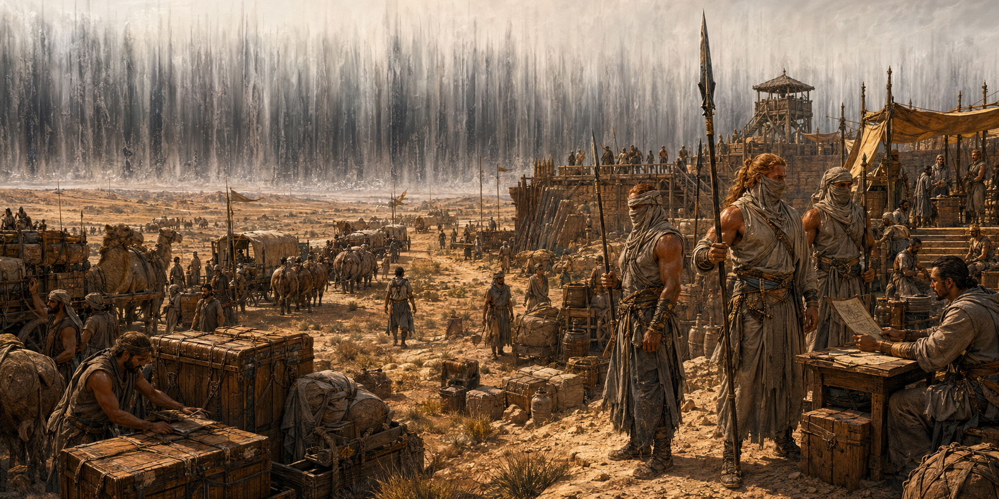
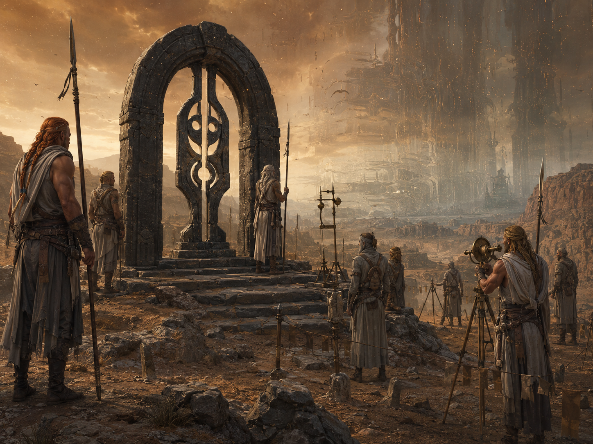

Происхождение и устройство Стены
Аномальная Стена — Великая перманентная аномалия континентального масштаба. Она возникла из временной аномалии 10-го рейтинга во время Великого выброса у Кинжала Убийцы Родни примерно в 20–30 ПБ. Выброс не разошёлся обычным пятном: он зацепился за напряжённый географический шов Хребта Мира и превратился в протяжённый фронт несогласованной реальности.
Сегодня Стена тянется от северного предела у Шайол Гул вдоль Хребта Мира и далее к южным широтам. Её исследованная линия дрейфует: отдельные участки могут смещаться на десятки миль, образовывать локальные «языки» и открывать редкие окна перехода. Южное продолжение теряется в плохо картографированных широтах; глобальная форма фронта достоверно не установлена.
Почему фронт движется
Известно, что крупные аномальные события, масштабное направление Единой Силы, войны и операции стабилизации нередко совпадают с последующими сдвигами фронта. Стражи и исследователи называют это перераспределением натяжения Узора, однако это остаётся рабочей теорией, а не доказанной физикой Стены.
Две области, три подзоны
| Область | Подзона | Смысл |
|---|---|---|
| Ореол (Тень) | Внешняя Тень | Реальность шумит, но подготовленная группа способна работать и двигаться. |
| Внутренняя Тень | Искажения сильнее, маршруты нестабильны, безопасное движение требует подготовки. | |
| Ядро (Гребень) | Гребень | Центральная область прямого слома реальности. Обычный пеший проход практически невозможен. |
Айил и Стражи Проходов
В течение первого столетия после появления Стены айил переопределили часть своей старой миссии. Одним из новых направлений стали Стражи Проходов: хранители перевалов, окон дрейфа и караванных коридоров. Их обычная подготовка — дисциплина, навигация, выживание и многолетнее знание фронта — сама по себе не является сверхъестественной Иерархией.
Иерархия Аномальной Стены — отдельная связь с самой Стеной, доступная лишь части Стражей Проходов и другим допущенным людям. Она возникла в айильской среде, но не является расово закрытой.

Авиенда и Узел Ядра
В первые десятилетия после рождения Стены Авиенда первой из известных людей достигла Ядра и установила связь с центральным источником феномена — Узлом Ядра, который исследователи также называют Реактором Стены. Ядро признало её первым Проводником, вершиной новой системы допуска.
Иерархия не собирает энергию с нижестоящих. Узел выдаёт её непосредственно по допуску: ранг определяет, какой объём воздействия носитель способен безопасно выдерживать и использовать.
Якоря
Примерно к 50 ПБ вдоль отдельных участков фронта была развёрнута сеть стационарных Арк — Якорей. Их официально известная функция — слушать ритм Стены и локально замедлять дрейф, не превращаясь при этом в щит или барьер. Сеть нескольких работающих Якорей помогает прогнозировать поведение фронта и окна прохода.
